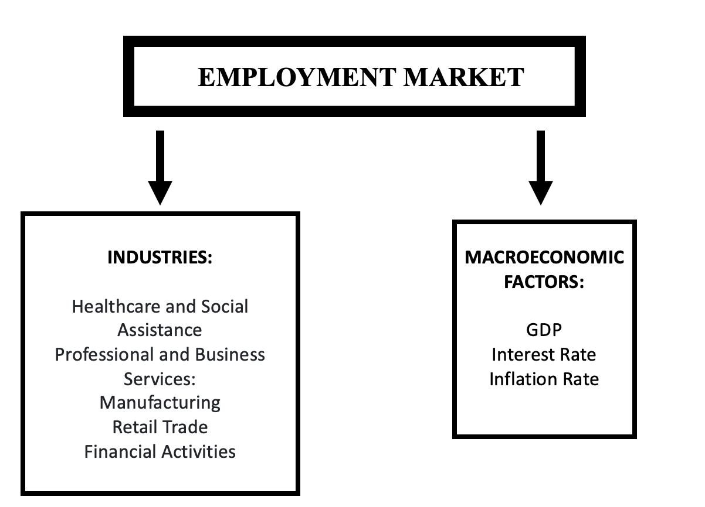
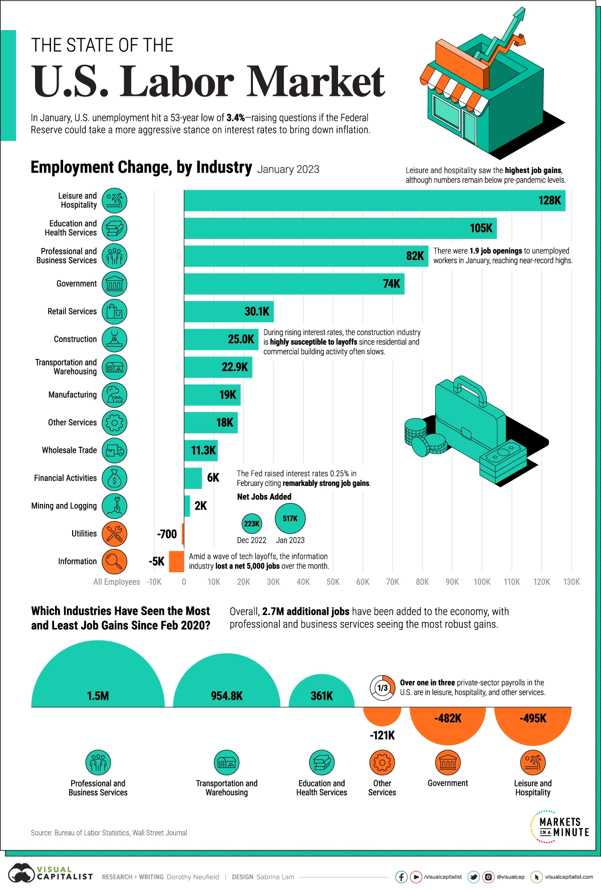
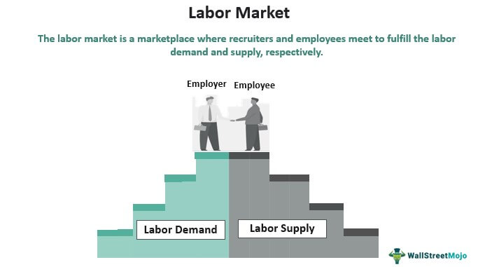

Conclusions/Discussion
The employment market in the United States is a critical component of the country’s economy, and it refers to the relationship between employers and workers. It encompasses a wide range of activities, including job creation, recruitment, hiring, training, and compensation.
The US employment market is characterized by its size and diversity. It is the largest economy in the world, with a labor force of over 160 million people, and a vast range of industries and occupations. The market is highly competitive, with employers competing for skilled workers and workers competing for jobs that provide good pay and benefits.
The employment market is closely linked to other aspects of the US economy, such as GDP, inflation, and productivity. Changes in the employment market can have significant effects on these factors, and vice versa. For example, when the employment market is strong and unemployment rates are low, it can lead to increased consumer spending, which can boost economic growth. On the other hand, high unemployment rates can lead to decreased consumer spending, which can slow down the economy.
Given the importance of the employment market to the US economy, policymakers and analysts closely monitor trends and changes in the market, such as shifts in job creation and wage growth, to understand how it is evolving over time.

Healthcare and Social Assistance: The Healthcare and Social Assistance industry is one of the largest and fastest-growing industries in the United States. It encompasses a wide range of services, including medical and dental care, nursing care, residential care, social assistance, and other healthcare-related services. This industry plays a critical role in the economy by providing essential services to individuals and families, as well as creating jobs and driving economic growth.
Professional and Business Services: The Professional and Business Services industry is a diverse sector that includes a wide range of occupations and businesses. This industry encompasses fields such as accounting, legal services, management consulting, engineering, and scientific research and development. This industry is crucial to the US economy as it provides support services to other industries and helps drive innovation and productivity.
Manufacturing: The Manufacturing industry is a critical sector of the US economy that produces a wide range of goods, including automobiles, electronics, chemicals, and machinery. This industry is responsible for creating jobs, driving economic growth, and contributing to the country’s overall productivity. Despite facing challenges such as global competition and changing consumer preferences, the Manufacturing industry continues to play a vital role in the US economy.
Retail Trade: The Retail Trade industry is a diverse sector that includes businesses involved in selling goods to consumers, both in-store and online. This industry is a critical component of the US economy, accounting for a significant portion of consumer spending and creating jobs across the country. With the rise of e-commerce and changing consumer preferences, the Retail Trade industry is undergoing significant transformation, and businesses must adapt to stay competitive.
Financial Activities: The Financial Activities industry is a diverse sector that includes businesses involved in banking, insurance, investment, and other financial services. This industry plays a vital role in the US economy by providing essential services such as lending, investment, and risk management. The Financial Activities industry is facing significant challenges, including regulatory changes and increased competition, but it remains a critical sector of the US economy.
Conclusion
In conclusion, our study provides valuable insights into the impact of macroeconomic factors on the US employment market from 2003 to 2023. The findings suggest that macroeconomic factors such as GDP, inflation rate, and interest rate have a significant impact on the employment market in the US. The study also highlights the importance of using advanced statistical and machine learning models to predict the employment market accurately.
The ARIMA and SARIMA models were effective in forecasting the employment market in the short-term, while the SARIMAX model, which included macroeconomic factors as predictors, was the most accurate in forecasting the employment market. Deep learning models, specifically ANN, GRU, and LSTM, outperformed ARIMA and SARIMA models in terms of forecasting accuracy, with the LSTM model having the highest accuracy among all the models tested.

The findings of this study have significant implications for policymakers, economists, and other stakeholders in the labor market. The study suggests that policymakers should carefully consider the effects of macroeconomic policies on the employment market, and measures to promote economic growth can help boost job creation and reduce unemployment rates. The study also highlights the importance of using advanced statistical and machine learning models to predict the employment market accurately.

Disscussion
The findings of our study have several implications for policymakers and economists who are interested in the US employment market. Firstly, our results suggest that macroeconomic factors such as GDP, inflation rate, and interest rate have a significant impact on the employment market. Policymakers should, therefore, be cautious when implementing macroeconomic policies that could affect these factors.
Secondly, our study highlights the importance of using advanced statistical and machine learning models to predict the employment market accurately. Our results show that deep learning models, in particular, can be highly effective in forecasting the employment market. However, the use of these models requires a significant amount of data and computational resources, which may be a challenge for smaller organizations.
Lastly, our study provides insights into the dynamics of the US employment market. The labor market is highly competitive, with employers competing for skilled workers and workers competing for jobs that provide good pay and benefits. Changes in the employment market can have significant effects on other aspects of the US economy, such as GDP, inflation, and productivity.
Overall, our study contributes to the growing body of literature on the relationship between macroeconomic factors and the employment market. The findings provide useful insights for policymakers, and economists.